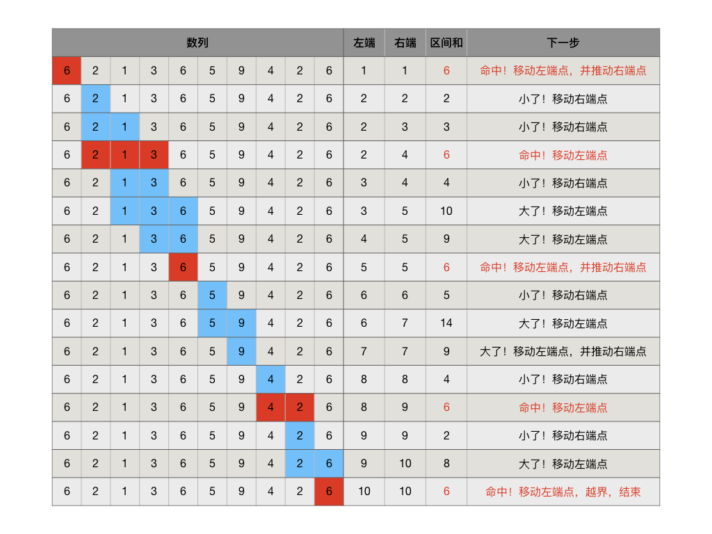
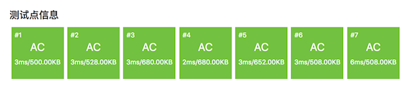

3.2.6. 尺取法（洛谷P1147）¶
尺取法又叫双指针法，它其实也是一种模拟，是解决寻找区间和问题的一种方法。
顾名思义，尺取法就是像尺子一样一段一段进行测量。尺取法使用一对下标表示所测量的区间的左右端点，根据测量结果不断地单向推进区间端点以找到答案。尺取法比直接暴力枚举区间效率高很多，是一种高效的区间枚举技巧，一般用于求取有特定区间和的所有子区间或最短的子区间等等。
注意
使用尺取法的时候，区间端点可以采用编程习惯的左闭右开原则，也可以采用数学习惯的闭区间，这可以根据个人习惯和题目情况来选择。本节中的示例和讲解都使用闭区间来表示尺的测量范围，作为编程训练大家可以尝试用含头不含尾原则改写本节的示例程序。
要在数列 \(A=\{a_n\}\) 中寻找所有区间和等于 \(s\) 的子区间，如果数列保存在数组 int a[] 中，那么用一个双层嵌套循环可以暴力枚举所有子区间。内外两层循环分别枚举所有子区间的左右端点，最内层还需要用一个单循环来计算出区间和：
for (int l = 0; l < n; l++) {
for (int r = l; r < n; r++) {
// 计算区间[l, r]的区间和
int sum = 0;
for (int k = l; k <= r; ++k) sum += a[k];
}
}
这样的方法时间复杂度为 \(O(n^3)\)。尺取法则可以把循环次数控制在 \(2n\) 次以内，时间复杂度降低到 \(O(n)\)。
当然任何技巧都存在其不足的地方，有些情况下尺取法不可行，无法得出正确答案，所以要先判断尺取法是否适用。尺取法的适用条件就是区间和的变化是有规律的，否则当一个子区间的测量结果出来后，我们就无从判断下一步是应该怎样移动尺子的端点。最为常见的这种数列就是全正项数列（或者全负项数列），这里我们用全正项数列为例来进行说明。
设有正项数列 \(\{a_n\}\)，记子区间 \([l,r]\) 的区间和为 \(s[l,r]=\sum_{i=l}^ra_i\)。那么当尺的两端向右移动的时候，我们可以确定，区间和的变化有以下规律：
左端向右移动，右端不变，区间和缩小：\(s[l,r] \gt s[l+1,r]\)，且有 \(s[l+1,r]=s[l,r]-a_l\)。
右端向右移动，左端不变，区间和扩大：\(s[l,r] \lt s[l,r+1]\)，且有 \(s[l,r+1]=s[l,r]+a_{r+1}\)。
利用上述两条规律，我们可以从最左端的第一个子区间 \([1,1]\) 开始，从左向右单方向地移动尺子，每移动一次只需要用一次加法或减法就能计算出新的区间和，直到左端移到尾项之后，就可以找出所有区间和等于 \(s\) 的子区间。
提示
用类似地方法，不难总结出尺子从右向左探测的技巧。但是一般来说，对于大多数既不是阿拉伯人又不是左撇子的人，从左向右移动尺子更加符合直观，容易理解。
归纳尺取法探测过程的步骤如下：
初始时，让尺子的左右两个端点都指向数列的首项 \(a_1\)，表示只含一个首项的区间 \([1,1]\)，这是整个尺取探测过程的起点。
假设子区间 \([l,r]\) 的区间和 \(s[l,r] \gt s\)，说明从 \(a_l\) 开始的子区间的区间和已经过大了，下一步应该缩短尺子长度。故向右移动左端点：\(l\leftarrow l+1\)。
假设子区间 \([l,r]\) 的区间和 \(s[l,r] = s\)，说明它就是一个要找的子区间。由于正项数列中没有小于等于零的项，所以下一步应该向右移动尺子，既可以两个端点都右移，也可以任意移动其中一个端点，都没有任何区别。方便起见，我们这里选择右移左端点。故记录下（或者输出）这个结果，然后向右移动左端点：\(l\leftarrow l+1\)。
假设子区间 \([l,r]\) 的区间和 \(s[l,r] \lt s\)，说明从 \(a_l\) 开始的子区间还不够大，下一步应延长尺子长度。故向右移动右端点：\(r\leftarrow r+1\)。
在移动尺子左端点的时候，有可能会导致区间长度缩小为0，这时候需要同时移动一下右端点，类似于左端点推动了一下右端点。特别需要注意的是，有些题目中子区间的最短长度可能不止是1。设题目要求的最短子区间长度为 \(m\)，那么一旦移动左端点后导致 \(r-l+1\lt m\)，就需要推一下右端点：\(r\leftarrow r+1\)。
尺子的右端点一定先于左端点抵达数列的尾项，此后当尺子的左端点移动到某个位置 \(l^\prime\) 使得 \(s[l^\prime,n] \lt s\) 或左端点越过整个数列的尾项时，整个尺取探测过程便告结束。
注意
有时候有些特定的问题（比如后面我们要讲解的洛谷P1147）会有一些不同的结束条件，但是移动尺子的方法都是一样的。
举个例子，在正项数列 [6,2,1,3,6,5,9,4,2,6] 中找出区间和为6的所有子区间，尺取探测过程如下图所示：
尺取法扫描一遍找到全部四个和为6的子区间总共循环了16次，而如果采用双层嵌套循环暴力搜索，加上最内层用来计算区间和的循环，一共需要循环184次。有兴趣可以思考一下这个184次是怎么得出来的。
下面我们来看一看怎样编写一个程序，读入一个数列、一个指定的区间和值，用尺取法找出所有符合要求的子区间。读入的数列存放在一个数组里，这次我们要求遵循C++的规则，从数组的0号位置开始存放数列。
#include <cstdio>
int main()
{
int n, data[101] = { 0 };
scanf("%d", &n);
for (int i = 0; i < n; i++)
scanf("%d", &data[i]);
int s;
scanf("%d", &s);
int l = 0, r = 0, sum = data[0]; // 初始化尺子
while (l < n && r < n) { // 循环条件为什么是这样？
if (sum >= s) {
if (sum == s) printf("sum[%d, %d]=%d\n", l, r, s);
sum -= data[l++]; // 移动左端点
if (l > r) sum += data[++r]; // 推动右端点
} else {
sum += data[++r]; // 移动右端点
}
}
return 0;
}
注解
循环条件
(l < n && r < n)是怎么来的？根据前面的描述，循环结束条件有两个：一是左端点超过界限
l >= n；另一个是右端点已经抵达数列尾项data[n-1]区间和小于目标值s，也就是r == n - 1 && sum < s。所以循环条件是l < n && !(r == n - 1 && sum < s)，但是这样太笨拙了。仔细思考一下不难发现，按照移动尺子端点的规则，如果左端点移动后区间和小于目标值，那么在下一轮循环时右端点就会被移动，如果本来右端点就已经在数列尾项上了，就会导致右端点越界。所以循环条件可以简化为“左右两个端点都在界内”：(l < n && r < n)。计算区间和可以和移动尺子端点同步完成。
移动右端点之后，区间和就是原来的区间和加上现在右端点所指向的那个项，我们用前置
++运算来移动右端点，先移动再取加数，sum += data[++r]；移动左端点之后，区间和就是原来的区间和减去左端点之前所指向的那个项，可以用后置++运算来移动左端点，先取减数后移动，sum -= data[l++]。
尺取法是一种实用的技巧，在许多算法编程题中都会用到。下面就是一个典型的常考题型，正整数分解为多个连续正整数之和。
连续自然数和（洛谷P1147）
题目描述
对一个给定的自然数 \(M\)，求出所有的连续的自然数段，这些连续的自然数段中的全部数之和为 \(M\)。
例子：\(1998+1999+2000+2001+2002 = 10000\)，所以从 \(1998\) 到 \(2002\) 的一个自然数段为 \(M=10000\) 的一个解。
输入格式
包含一个整数的单独一行，给出 \(M\) 的值（\(10 \le M \le 2,000,000\)）。
输出格式
每行两个自然数，给出一个满足条件的连续自然数段中的第一个数和最后一个数，两数之间用一个空格隔开，所有输出行的第一个按从小到大的升序排列，对于给定的输入数据，保证至少有一个解。
输入输出样例
输入：
10000
输出：
18 142
297 328
388 412
1998 2002
题目分析
本题是一个典型的尺取法考题，分析题目后可以发现它和通常的尺取法有三个略微不同之处：
从样例的输出中没有长度为1的区间
[10000, 10000]可以看出，仅含输入值M本身的单元素区间是不视作为一个解的，因此本题所要求的子区间长度至少为2。本题的数列就是从1开始的自然数序列，所以本题不需要一个数组来保存数据。把左端点、右端点、区间和分别初始化为1、2、3，端点所在位置的数值就是端点的值。
因为子区间长度至少为2，所以尺取的探测范围可以减半。如果
M是奇数，那么最后一个子区间一定是[M/2, M/2+1]；如果M是偶数，那么最后一个子区间的右端点一定比M/2更小。故探测范围的尾项最大也就是M/2+1，鉴于子区间最小长度为2，所以左端点的探测范围要比右端点小1。由此我们可以得出循环结束条件为：左端点大于M/2或 右端点大于M/2+1。
下面就是能够AC的代码，但是在看到代码之后，我们发现还有两个地方和前面描述的标准的尺取法有所不同，请想一想为什么再看解释。
#include <iostream>
using namespace std;
int main()
{
int m;
cin >> m;
int mid = m / 2;
int l = 1, r = 2, sum = 3;
int loops = 0;
while (l <= mid) { // 为什么这里没有用第二个条件 (r <= mid + 1)？
loops++;
if (sum >= m) {
if (sum == m)
cout << l << " " << r << endl;
sum -= l++;
// 没有这句：if (l > r - 1) sum += ++r; 不需要推右端点？
} else {
sum += ++r;
}
}
return 0;
}
现在我们来解释一下为什么出现了两处省略。
循环条件为什么不需要判断右端点是否在界内？
前面已经说过，对于奇数
M，最后一个子区间一定是[M/2, M/2+1]。找到这个解之后的下一轮循环会右移左端点，于是左端点被移动到M/2+1，这样左端点就越界了。因此奇数的情况在找到最后一个解以后整个过程就会因左端点越界而自然结束。M是偶数的情况略微复杂一些，此时最后一个解的右端点位置不能确定。但至少可以确定它一定小于M/2，且最后一个解的区间长度一定至少为3。另外，当尺子逐渐接近但还没有越过M/2这个界限的时候，任意两个相邻自然数的和都一定小于M，而三个连续自然数的和在某个位置之后一定会大于M。所以按照尺子移动的规则，随着尺子的右端点离界限M/2越来越近，尺子的长度一定会缩短到2。这就意味着就算我们不判断右端点是否越界，事实上当右端点到达M/2+1的时候，左端点也一定随之到达M/2，这时候区间和为M+1，大于M，于是下一轮循环左端点会被移动到M+1，导致左端点越界，整个过程结束。综上所述，我们完全可以不考虑右端点是否越界，这是本题数列的特殊性带来的一个小便利。
为什么不需要在移动左端点后判断是否要推动右端点？
标准的尺取法，在移动左端点后要判断区间长度是否变得小于最小长度，如果是，就要推动一下右端点。按照前面的分析，本题要求子区间长度至少为2，所以在移动了左端点之后应该判断是否导致了
r - l + 1 < 2，如果是就要推一下右端点。但是实际代码里并没有这么做，这还是和我们的界限M/2有关。在我们的探测范围内，任意两个相邻数之和都小于M，所以每当区间长度缩短到最小长度2，下一次必然是移动右端点使得区间长度增加到3。换句话说，整个过程中不可能出现区间长度小于2的情况，因此不需要做这一步。这仍然是题目的特殊性带来的便利。
下面是AC页面的截图，速度非常之快。如果去看洛谷的题解，有人用了前缀和，有人用了二分搜索，还有用上了等差数列求和公式和二次方程求根等等方法。都很强，但是这就是一个普通的尺取法题目，而且基本可以肯定尺取法已经达到了速度的巅峰。
重要
从这一章介绍的单调区间统计、区间和、前缀和、尺取法等算法都可以看到，算法虽然有所谓模板算法、标准算法，但是在实际应用时，往往根据问题的不同，可以有不同的改变。有些题目数据的特性可以带来许多便利，可以减少标准算法里的一些步骤环节。有时候题目会引入一些特殊数据特殊情况，让我们必须对算法增加一些特殊处理。而且，在软件设计的世界里，永远没有背诵一遍全场适用的标准代码，只有弄懂算法的原理，然后在解题时灵活运用才是正确之道，请千万不要背代码，哪怕是最经典的算法教材上的代码。